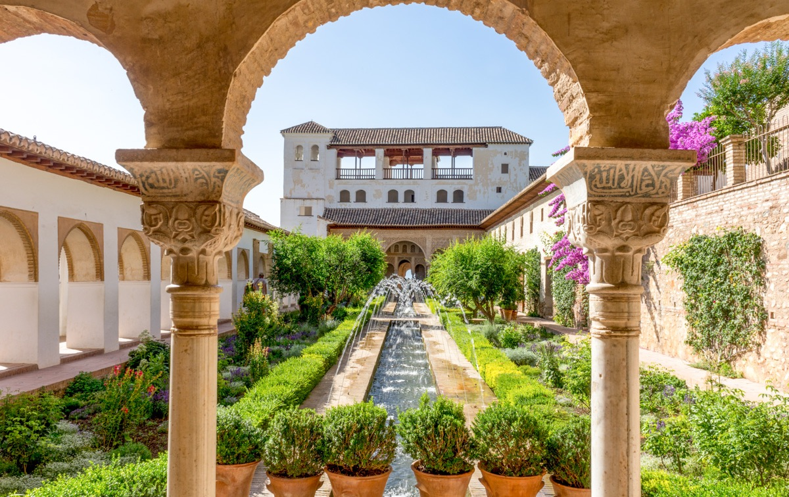
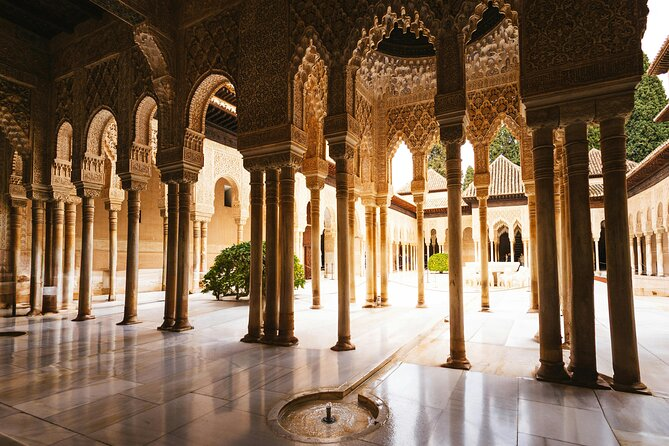
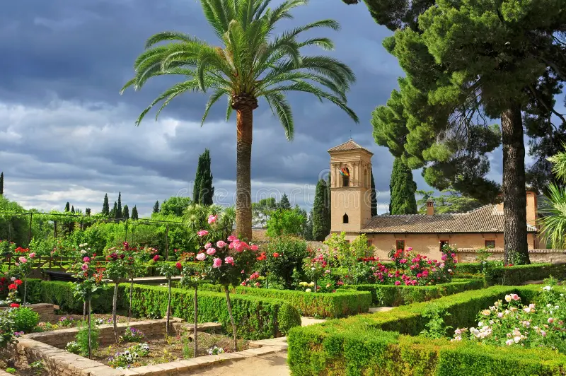
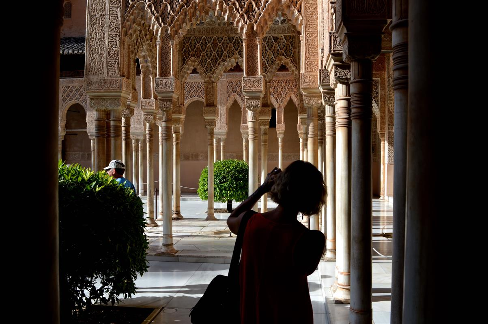

Las zonas esenciales que componen el monumento
Es la parte más antigua. Era la fortaleza militar donde vivían los soldados para defender la ciudad. Desde sus torres hay una vista increíble de Granada.
Es el corazón del monumento. Aquí vivían los reyes musulmanes. Son famosos por su decoración detallada en las paredes, sus fuentes y sobre todo por el famoso Patio de los Leones.
Era la residencia de descanso de los reyes. Está lleno de jardines maravillosos, plantas y canales de agua para refrescar el ambiente en verano.

